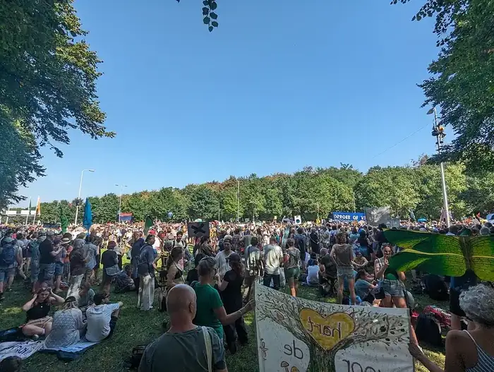
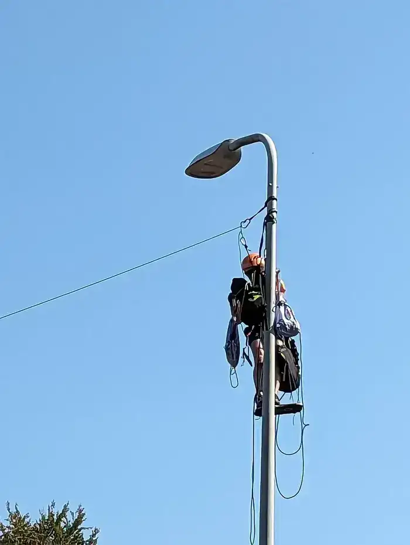

The proposals
De-extinction uses ancient DNA, gene editing and surrogate species to produce animals resembling extinct ones. The best-funded project aims at a cold-adapted elephant edited with mammoth genes; others target the thylacine and the passenger pigeon. Ancient DNA is fragmentary, so the approach is editing a living relative rather than cloning the extinct animal.
Maps, diagrams and images





What has been achieved
No de-extincted animal exists. The closest results are cellular: induced pluripotent stem cells from an endangered rhino, and the cloning of a black-footed ferret from frozen tissue — a conservation success, not a de-extinction. The mammoth project has published gene edits in cells, not animals.
The ecological objections are substantial: an edited elephant needs a herd, a habitat and a microbiome, and the Arctic it would inhabit no longer exists in its Pleistocene form. The conservation objection is that the money and attention would be better spent on species that are still alive.
Documented: ancient DNA recovery; gene editing; the project plans.
Documented: cellular progress in related conservation work.
Not achieved: any de-extincted organism.
Contested: whether a proxy species counts as restoration.
The honest label: live debate — a real research programme with a large gap between the press releases and the animals.
Why it is in the archive
Because it is the case where the headline ('the mammoth returns by 2027') and the state of the science are furthest apart, and because the ethics are genuinely arguable rather than obviously wrong.
Open resources on this topic
- BookBring back the king : the new science of de-extinction — Pilcher, Helen, author · 2017 (Internet Archive, free to read)
- BookResurrection Science: Conservation, De-Extinction, And The Precarious Future Of Wild Things — M. R. O'Connor · 2015 (Internet Archive, free to read)
- BookExtinction, de-extinction and conservation: a dangerous mix of ideas — ['Peter B. Banks', 'Dieter F. Hochuli'] · 2017 (Internet Archive, free to read)
- PapersOpen-access articles: DOAJ · PubMed Central · Internet Archive Scholar
- BooksPublic-domain and borrowable copies: Open Library · Project Gutenberg · Google Books
Cite this page
Momin, S. (2026). De-Extinction. The Larger World Archive. https://drsamonline.github.io/LARGE_GLOBE/de-extinction.htmlMomin, Sohil. “De-Extinction.” The Larger World Archive, 2026, https://drsamonline.github.io/LARGE_GLOBE/de-extinction.html.Momin, Sohil. “De-Extinction.” The Larger World Archive, 2026. https://drsamonline.github.io/LARGE_GLOBE/de-extinction.html.@misc{deextinction2026de,
author = {Momin, Sohil},
title = {De-Extinction},
year = {2026},
howpublished = {The Larger World Archive},
url = {https://drsamonline.github.io/LARGE_GLOBE/de-extinction.html},
note = {Last reviewed 20 November 2026}
}Last reviewed 20 November 2026 · Corrections policy · this page is not peer reviewed
Sources for this page
- Wikipedia, “De-extinction” — the projects and the debateen.wikipedia.org
- Wikipedia, “Colossal Biosciences” — the mammoth projecten.wikipedia.org
- Wikipedia, “Ancient DNA” — the material and its limitsen.wikipedia.org
- Wikipedia, “Conservation biology” — the alternative use of the moneyen.wikipedia.org